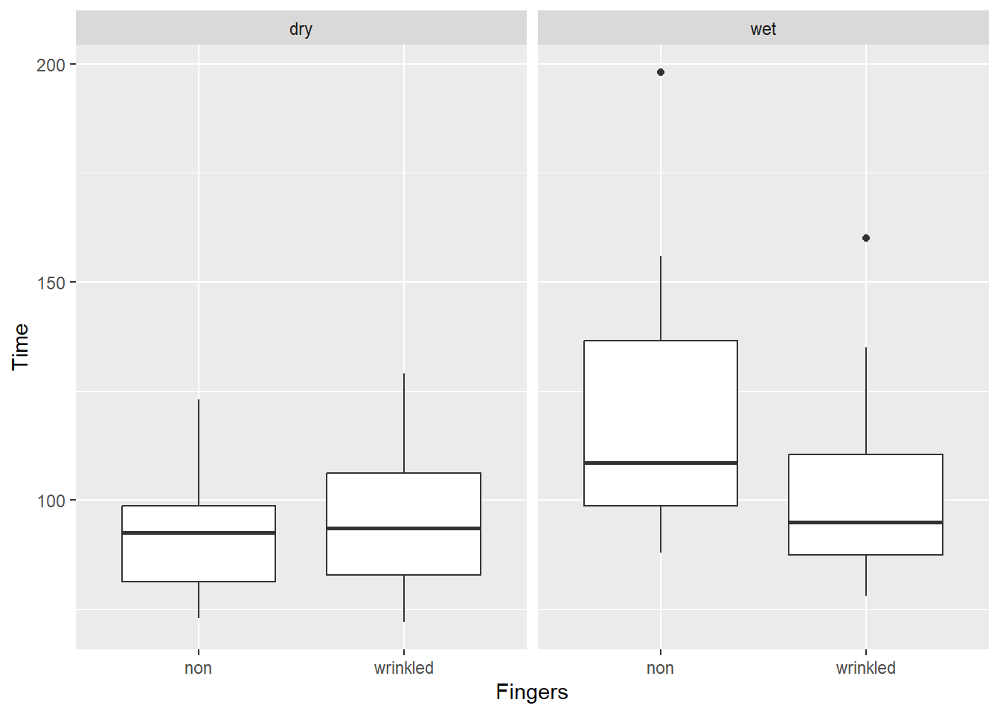
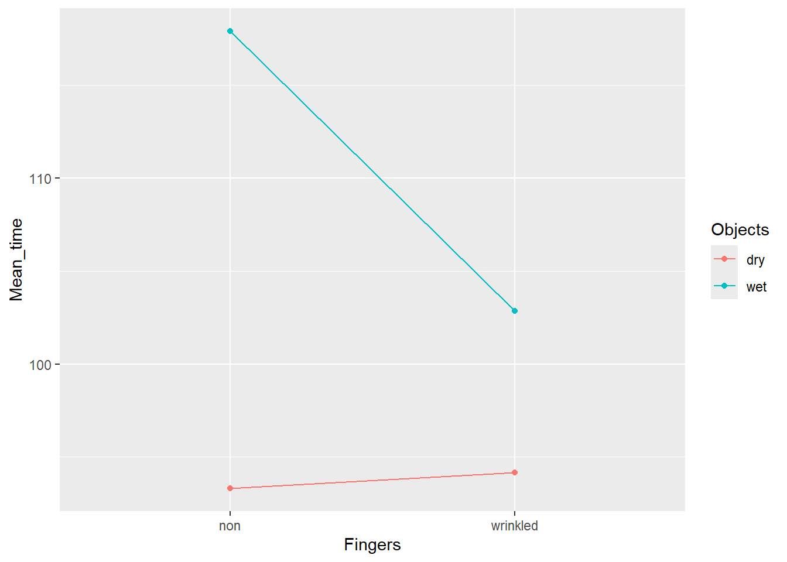

An Introduction to lavaan: How Do Wet Fingers Wrinkle?
For this demonstration, we will make use of data from the following study:
Kareklas, et al. (2013) “Water-induced finger wrinkles improve handling of wet objects”, Biology Letters, http://dx.doi.org/10.1098/rsbl.2012.0999
Workspace
First, we’re going to clear the workspace (beware! This will remove everything from the “environment”).
Now, let’s set the working directory. You will remember that the working directory is the folder where R will look for and save files to. If you want to know what your current working directory is, run the command below:
To change it, modify the path in the quotation marks " " below to your
directory.
Now let’s load the relevant packages. In this demonstration, we’ll be
using the lavaan library, but also a few others: fastDummies which
will facilitate the generation of dummy variables, and emeans for
computing and plotting estimated marginal means. You must install these
prior to loading them.
In addition to these, we will also need tidyverse to allow us to make
use of the pipe operator, ggplot2 for plotting results and janitor
for generating frequency tables.
Experimental Design
The skin on our fingers and toes wrinkles when it has been in water for a few minutes. Why on earth does it do this? The skin on almost all other body parts does not wrinkle when wet.
Twenty participants were asked to pick up small objects with the right hand thumb and index finger, pass them through a small hole, grab them with the left hand, and put them into a box that had a hole in the lid. For half the trials, participants had their fingers soaked in water, making the skin wrinkle. On the other half of the trials, the fingers were dry. For half the trials the objects were wet. For the other half, the objects were dry.
The time it took the participants to finish the task of passing all of the objects into the box was recorded for each condition:
- Condition 1: Wet/wrinkled fingers, wet objects
- Condition 2: Wet/wrinkled fingers, dry objects
- Condition 3: Dry fingers, wet objects
- Condition 4: Dry fingers, dry objects
Hypothesis: Skin wrinkling is an adaptation to improve grip when in wet environments. That’s why we only need it on our fingers (for handling wet objects) and toes (for walking on wet surfaces).
Research Question: Will objects be easier/quicker to handle with wrinkled/wet fingers compared to with dry fingers?
Frequency for Variables and Levels
Fingers were wet/wrinkled half the time
## Fingers n percent
## non 40 0.5
## wrinkled 40 0.5Objects were wet half the time
## Objects n percent
## dry 40 0.5
## wet 40 0.5Participants 1 to 20 (all four conditions)
## Participant n percent
## p1 4 0.05
## p10 4 0.05
## p11 4 0.05
## p12 4 0.05
## p13 4 0.05
## p14 4 0.05
## p15 4 0.05
## p16 4 0.05
## p17 4 0.05
## p18 4 0.05
## p19 4 0.05
## p2 4 0.05
## p20 4 0.05
## p3 4 0.05
## p4 4 0.05
## p5 4 0.05
## p6 4 0.05
## p7 4 0.05
## p8 4 0.05
## p9 4 0.05The Causal Model
This was an experiment. The values of the predictors (Fingers and Objects) were decided by the experimenters, so they are uncorrelated causes of the outcome (Time).
Specific Hypotheses:
Handling wet objects will take longer than handling dry objects
Handling objects with wet fingers will take longer than with dry fingers
Handling wet objects will be faster if done with wet/wrinkled fingers than with dry fingers
Handling time for dry objects will NOT be affected by whether the fingers are wet or dry
Statistical Model
The hypothesis is not simply that wet fingers and wet objects will result in slower handling time, it is that wet fingers will reduce the slowing effect of handling wet objects specifically. This implies an interaction between Fingers and Objects.
Preparing the Data
First we’ll create numerical dummy variables for having wet (wrinkled) fingers and wet objects.
wrinkle <- dummy_cols(wrinkle, select_columns = "Fingers")
wrinkle <- dummy_cols(wrinkle, select_columns = "Objects")We now have two new dummy variables: Fingers_wrinkled and Objects_wet
## rownames Participant Time Condition Fingers Objects WrinkledThenNon
## 1 1 p1 106 non-wrinkled/dry non dry 1
## 2 2 p2 113 non-wrinkled/dry non dry 2
## 3 3 p3 94 non-wrinkled/dry non dry 1
## 4 4 p4 96 non-wrinkled/dry non dry 2
## 5 5 p5 93 non-wrinkled/dry non dry 1
## 6 6 p6 123 non-wrinkled/dry non dry 2
## DryThenWet Fingers_non Fingers_wrinkled Objects_dry Objects_wet
## 1 1 1 0 1 0
## 2 1 1 0 1 0
## 3 1 1 0 1 0
## 4 1 1 0 1 0
## 5 1 1 0 1 0
## 6 1 1 0 1 0And then we create an interaction variable for Fingers and Objects.
Finally, lets’s re-organise the data so that it can be used with
ggplot2, so we can visualise the data. We need to convert the
Participant variable to a numeric variable so that we can sort it
correctly. We’ll use the str_replace() function from the stringr
library to remove the “p” from the Participant variable, and then
convert it to a numeric variable using as.numeric(). We’ll then use
relocate() from dplyr to move the id variable to the second
column. Finally, we’ll use arrange() also from dplyr to sort the
dataframe by the id variable. We’ll save the sorted dataframe as
wrinkle2.
Visualing the Data
Great, now we have a dataset that we can use with ggplot2. We can use
either wrinkle or wrinkle2 to analyse the data with lm() and
lavaan.
Let’s see the completion time for each condition as a boxplot.

We have four boxplots, one for each condition. The thick black horizontal line in the middle of each box is the median time to complete the task. The upper and lower edges of the box are the 75th and 25th percentiles of completion times for each condition. The “whiskers” extend to the most extreme completion times, that represent the 2.5% and 97.5% percentiles of the data. The dots are “outliers” - completion times that are so extreme that they are outside of the whiskers, which represent 95% of the data. It’s clear that handling wet objects with dry (“non” wrinkled) fingers has the highest median handling time.
Let’s now take a look at a line graph of the interaction. First, we compute a summary statistic (the mean) for each condition.
## `summarise()` has grouped output by 'Fingers'. You can override using the
## `.groups` argument.Then, we plot the above statistics.
wrinkle2_summary %>%
ggplot(aes(x = Fingers, y = Mean_time, color = Objects)) +
geom_line(aes(group = Objects)) +
geom_point()
The dots show the mean completion time for each condition. The lines connect the dots for the same object type. The lines are not parallel, which suggests that we have an interaction between Fingers and Objects. However, this graph does not show us the uncertainty in the mean completion times. (The graph is also misleading because the y-axis does not begin at zero, which makes the differences across contitions look larger than they are.)
To fully assess our hypotheses, we need to fit statistical models of the mean differences, which take into account the uncertainty in the mean completion times, by computing standard errors (SEs) for the differences.
The lavaan Package
With lavaan, we define the statistical model as an object and we name it model. The object specification is enclosed in single quotes. As you can see below, the model structure is similar to that of lm().
To then fit the model to the data, we use the sem() function.
One difference is that lavaan does not include intercepts in the model by default, so we have to ask for them by including the option meanstructure = TRUE.
Let’s take a look at the output.
## lavaan 0.6-18 ended normally after 1 iteration
##
## Estimator ML
## Optimization method NLMINB
## Number of model parameters 5
##
## Number of observations 80
##
## Model Test User Model:
##
## Test statistic 0.000
## Degrees of freedom 0
##
## Parameter Estimates:
##
## Standard errors Standard
## Information Expected
## Information saturated (h1) model Structured
##
## Regressions:
## Estimate Std.Err z-value P(>|z|)
## Time ~
## Fingers_wrnkld 0.850 6.257 0.136 0.892
## Objects_wet 24.600 6.257 3.932 0.000
## Interaction -15.900 8.849 -1.797 0.072
##
## Intercepts:
## Estimate Std.Err z-value P(>|z|)
## .Time 93.300 4.424 21.088 0.000
##
## Variances:
## Estimate Std.Err z-value P(>|z|)
## .Time 391.489 61.900 6.325 0.000As you can see, there is a lot more output than from lm()! For now, we will focus on the part starting at regressions.
Tasks and Questions
Task 1
Fit a linear model using lm() to evaluate the effect of the predictors Fingers and Objects, and their interaction, on outcome Time.
Are the specific hypotheses supported by the data?